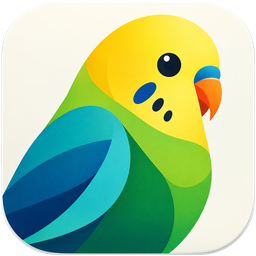

MikiViewer
A fast image viewer and editor for Mac that reads the text in your images, in English, Macedonian and about 120 other languages.
Latest release
macOS 26 or later · Apple silicon · Free to use
What it does
Select text on the image
Text is recognized as soon as an image opens. Drag across it, double-click a word or triple-click a line, then press ⌘C.
English & Macedonian built in
Including Ѓ, Ќ, Љ and Ѕ, and lines that mix both languages. Download more from Tools ▸ OCR Languages.
Protect Privacy
One click finds faces, emails, phone numbers, card numbers, IBANs and ЕМБГ numbers and hides them for good, and strips location data from the file.
Extract Text
Pull all the text from an image, or just a selected area, into a panel you can edit, copy or save.
Mark up
Shapes, arrows, text, sketches and signatures, all editable until you save.
Edit
Crop, rotate, resize, color adjustments, auto levels and one-click background removal.
Browse
Open whole folders, flip through thumbnails, zoom, full screen and slideshows.
What’s new
See the latest release notes on GitHub.
Installing
- Open MikiViewer.pkg and follow the steps. Any previous version is removed first; your downloaded languages and settings are kept.
- MikiViewer isn’t notarized by Apple, so macOS blocks the first launch. Right-click the installer or the app and choose Open, or allow it under System Settings ▸ Privacy & Security.
Prefer the disk image? Open MikiViewer.dmg and drag MikiViewer onto Applications, choosing Replace if asked.